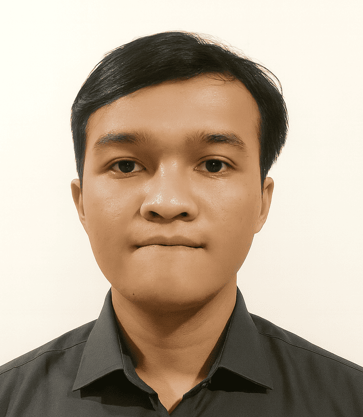

I am a passionate software developer specializing in web and IoT solutions. I enjoy building modern, responsive, and interactive applications by combining clean code, smart system design, and cutting-edge technologies to deliver impactful digital experiences.
IoT Web Based Air Quality Monitoring Project — Trenggalek, East Java
Developed an IoT-based air quality monitoring system integrated with a web application, capable of capturing real-time air sensor data and displaying accurate graphs and air quality status for monitoring and analysis.
System Analysis & Use Case Design — Malang, East Java
Conducted requirement analysis for the Malang Mbois application by creating Use Case Diagrams, Use Case Scenarios, and business process flows, while collaborating with the development team to ensure proper documentation and successful system implementation.
Independent Study Program – Web Development — Malang, East Java
Learned and implemented web development using HTML, CSS, JavaScript, PHP, and modern frameworks, while designing web application features based on system requirements, creating use case designs, and collaborating with team members to ensure proper documentation and implementation.
Interested in working together, collaborating on a project, or discussing web & IoT development ideas? Feel free to reach out through any of the platforms below.
or copy my email: ananta076238@gmail.com